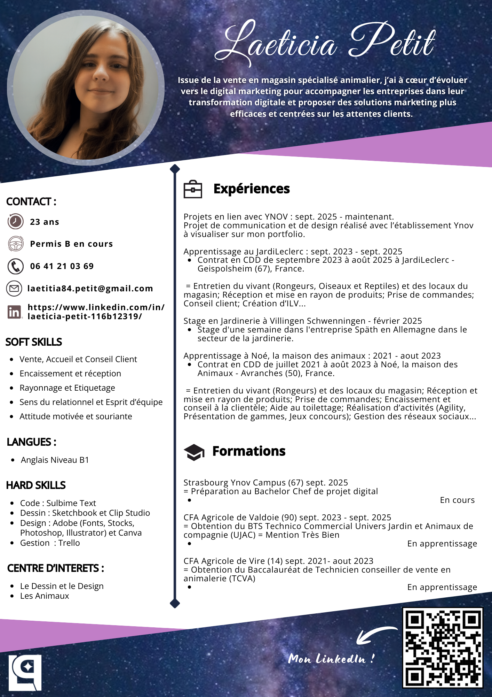

MON PORTFOLIO
Qui suis-je ?
À mon sujet
Ma Galerie
De la Formation au Projet
Mon parcours de Formation
Mon CV
Mes projets
Mes Projets Evénementiels
Mes Créations Visuelles
Mon CV
Vous pouvez consulter mon CV directement ci-dessous ou le télécharger au format PDF.

Télécharger mon CV (PDF)
↑